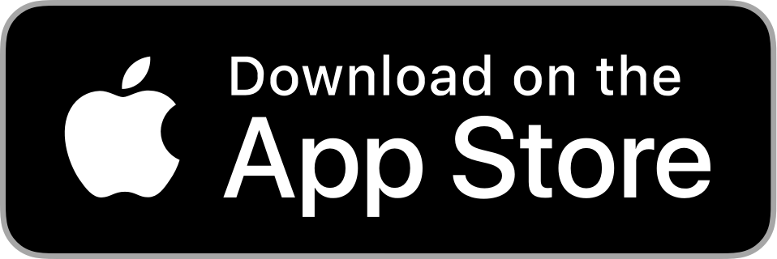

Abyss. The best way to save links for later.
I've built Abyss to be the best read later app on your iPhone, iPad and Mac. Built from the ground up with privacy in mind, Abyss doesn't require you to log in on any external service. Everything happens on your device, and thanks to iCloud, your data is synced between all your devices and it's safely stored. Categorize your links by tags, add notes to remember why you saved them, search instantly on your entire library or download an offline copy of a website. Download it for free on the App Store.
Key Features
Privacy
Aren't you tired of having to create accounts in some websites just to save your links? Well Abyss fixes such issue. You'll never have to sign in into any external service because all your data is safely stored on your own personal iCloud and only you have access to it.
Speed
You don't want to have to wait when you're searching for something. Because all your data is stored on your device, searching for a link based on it's title, URL or notes is lightning fast. And not just searching, the entire app is fine tuned to run buttery smooth on all your devices.
Omnipresence
Have I mentioned that all your data is stored on your iCloud account? This has the benefit that your data will magically appear on all your devices. Everything that you save on your iPhone will also appear on your Mac and on your iPad without you having to do anything.
Offline
Are you going on a trip and do you want to make the most of sitting on a plane with no cellular connection? Abyss allows you to save any link offline, creating an offline copy of the entire website. This is also useful if you want to always have access to a resource, even if it's deleted by the original author.